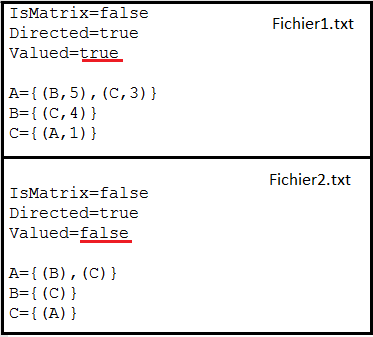

Le graphe
Création d'un graphe
| Fichier → Nouveau Choix des paramètres: Lors de la création d'un graphe vous pouvez choisir que votre graphe soit valué ou non et orienté ou non. Une fois cliqué sur valider, le graphe est crée et vous pouvez commencer à ajouter des composants |
Ouverture d'un graphe
 |
Cliquer sur l'icone ouvrir ou Fichier → Ouvrir Choisir un fichier contenant une matrice ou une liste d'adjacence dans le bon format, ou un graphe enregistrer. Cliquer sur ouvrir, le graphe va se charger. |
Format de la matrice
Pour ouvrir une matrice écrite à la main dans un fichier texte, le fichier doit respecter le format suivant:
-Pour un graphe non valué:

Mettre 0 quand il s'agit de l'arc lui-même Mettre 1 quand il y a un arc entre les deux sommets Mettre -1 quand il n'y a pas d'arc entre les deux sommets Attention à ne pas mettre d'espace à la fin des lignes !

Pour un graphe valué:
Mettre 0 quand il s'agit de l'arc lui-même Mettre la valeur quand il y a un arc entre les sommets Mettre -1 quand il n'y a pas d'arc entre les sommets Attention à ne pas mettre d'espace à la fin des lignes !
Format de la liste d'adjacence
Pour ouvrir une liste d'adjacence écrite à la main dans un fichier texte, le fichier doit respecter le format suivant:
Si le graphe est valué, écrire chaque sommet suivis des sommets auquels il est relié et la valeur de l'arc. Si le graphe n'est pas valué, écrire seulement chaque sommmet suivis des sommets auquels il est relié. Que le graphe soit orienté ou non ne change pas la manière d'écrire la liste d'adjacence.
Enregistrer le graphe
| Cliquer sur l'icone enregistrer ou faire fichier -> enregistrer sous / enregistrer Choisir le dossier où le fichier sera enregistrer et entrer le nom du document. Si le fichier n'a pas été enregistrer une première fois, cliquer sur enregistrer ouvrira la fenêtre pour enregistrer sous |
Consulter les informations du graphe
 |
Les informations sur le graphe sont stockés dans la liste sur la gauches. On peut y consulter les sommets et les arcs que possèdent le graphe. Pour passer de l'un à l'autre, il suffit de cliquer sur les flèches. |